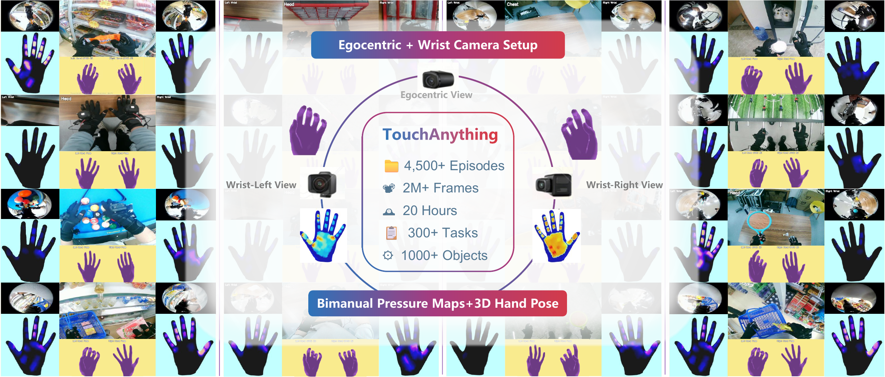

TouchAnything: A Dataset and Framework for Bimanual Tactile Estimation from Egocentric Video
Harbin Institute of Technology, Shenzhen; Meituan Academy of Robotics
A large-scale, multi-view tactile dataset for egocentric hand-object interaction, with bimanual 3D hand pose annotations and dense continuous pressure maps.
Project page